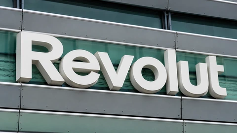
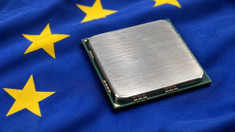

Financial news, market analysis and technology
Top Story
Market Analysis View all →

Market Analysis
Toyota Raises Buyback to ¥1.3 Trillion as Operating Profit Rebounds
Toyota lifted its annual operating-profit forecast to ¥3.9 trillion. A stronger operating quarter and a larger buyback contrast with a decline in quarterly net income.

Market Analysis
Meta’s €9 Billion Euro Bond Debut Broadens Its AI Financing Drive
The reported euro bond sale follows a $15 billion U.S. offering. Meta is widening its funding base as heavy capital spending puts pressure on free cash flow.

Market Analysis
U.S. Services Growth Slows as High Costs Complicate the Fed’s Next Move
October’s ISM services index fell to 54.5, while the prices gauge stayed at 73.0. Slower orders and strained household purchasing power leave a difficult mix for monetary policy.

Market Analysis
U.S. Treasury Keeps $125 Billion Refunding as Longer-Term Funding Gap Looms
A $125 billion refinancing will raise about $28 billion in new cash. Larger buyback plans and a future seven-year-note change reshape the debt-management agenda.
Tech & AI View all →
Tech & AI
Kyndryl and AWS Target Legacy IT Costs With Agentic Modernization
The IT services company is combining its modernization workflows with AWS Transform. The commercial test is lower migration and maintenance costs after validation, not just faster code changes.

Tech & AI
Revolut Says Self-Hosted AI Cut Its Coding Model Bill by 90%
The fintech runs GLM on 56 NVIDIA B200 GPUs for about 2,000 engineers. Its reported savings put infrastructure utilization and the full cost of AI in focus.

Tech & AI
Europe Launches €525 Million Chip-Design Push to Help Startups Reach Production
The package combines €440 million in grants with €85 million for design infrastructure. Access to software and manufacturing could matter as much as cash for young chip companies.

Tech & AI
OCC Puts AI Agents’ Financial Powers at the Center of Bank Examinations
The U.S. banking regulator’s new examiner guide focuses on what AI systems can do, the consequences of errors and human oversight. It creates no separate AI risk category or new enforceable standard.
Crypto View all →
Crypto
Canton Strategic Shares Begin Tokenized Trading on a Permissioned Venue
CNTN shares traded through TSV’s Tradecraft pools on Canton. Issuer-backed ownership records and verified access distinguish the launch from unrestricted trading in synthetic stock tokens.

Crypto
BitGo Launches Global Markets as Crypto Custody Expands Into Financing and Hedging
The new business combines trading, financing, collateral management and derivatives after BitGo’s earlier purchase of NYDIG’s institutional trading operation.

Crypto
Schroders Brings Emerging-Market Bond Exposure to Solana Through Centrifuge
The new structure gives investors tokenized shares in a feeder fund investing in a Schroders bond strategy. It broadens onchain fixed income beyond cash products without removing credit or liquidity risk.

Crypto
Circle’s Revenue Rises 17%, but ARC Token Sales Drive the Increase
ARC token sales contributed $182 million to Circle’s quarter. Excluding that line, revenue and reserve income fell even as average USDC circulation increased.
News Feed